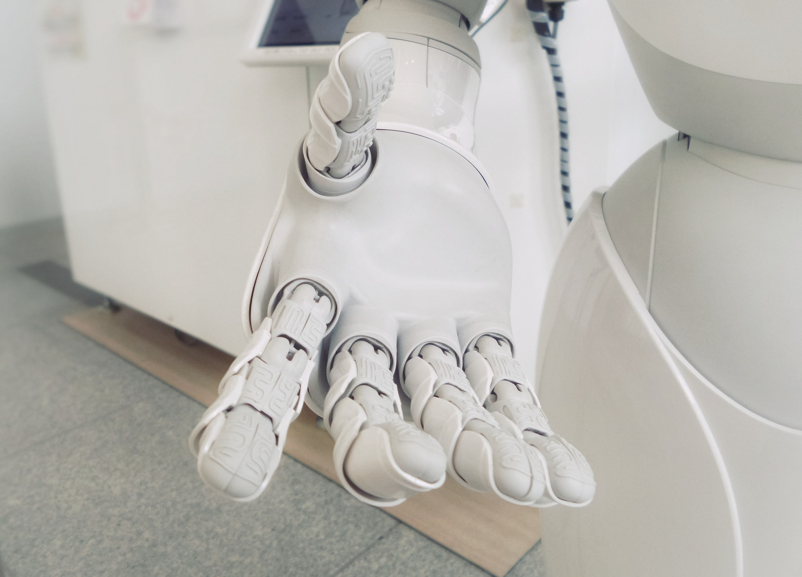
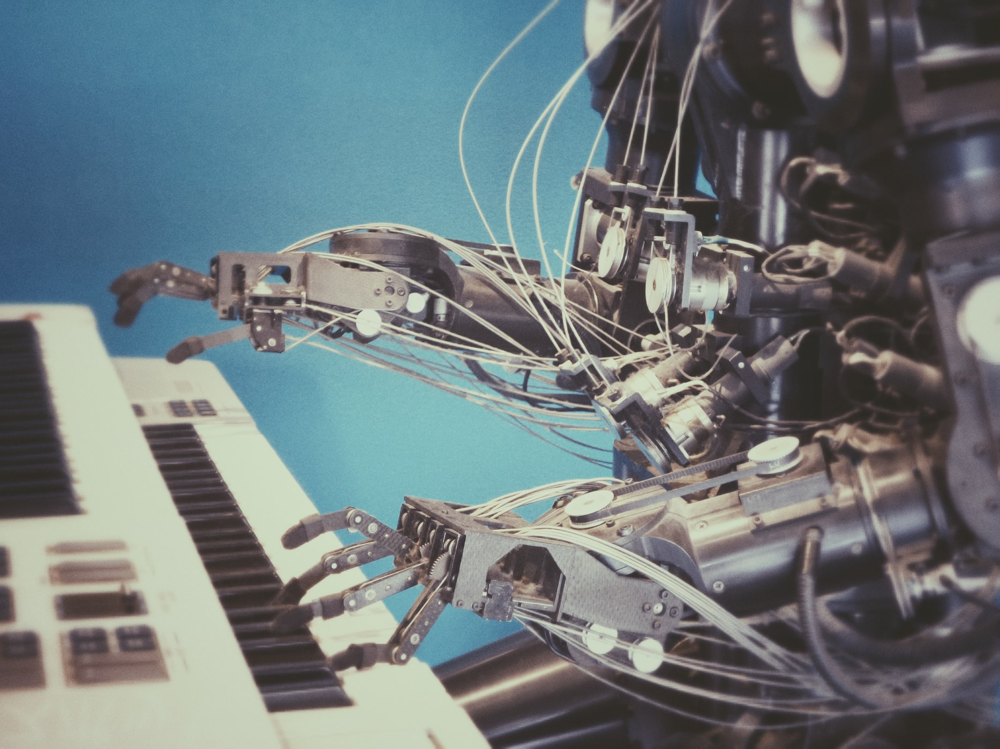

Artificial intelligence (AI) is the simulation of human intelligence processes by machines, especially computer systems. These processes include learning (the acquisition of information and rules for using the information), reasoning (using rules to reach approximate or definite conclusions) and self-correction. Particular applications of AI include expert systems, speech recognition and machine vision.
AI can be categorized as either weak or strong. Weak AI, also known as narrow AI, is an AI system that is designed and trained for a particular task. Virtual personal assistants, such as Apple's Siri, are a form of weak AI. Strong AI, also known as artificial general intelligence, is an AI system with generalized human cognitive abilities. When presented with an unfamiliar task, a strong AI system is able to find a solution without human intervention.
Because hardware, software and staffing costs for AI can be expensive, many vendors are including AI components in their standard offerings, as well as access to Artificial Intelligence as a Service (AIaaS) platforms. AI as a Service allows individuals and companies to experiment with AI for various business purposes and sample multiple platforms before making a commitment. Popular AI cloud offerings include Amazon AI services, IBM Watson Assistant, Microsoft Cognitive Services and Google AI services.
History of AI
1642
1837
1943
1950
1955
1965
1980s
1997
2002
2009
2011
2014
2016
2018
First mechanical calculating machine built by French mathematical and inventor Blaise Pascal.
First design for a programmable machine, by Charles Babbage and Ada Lovelace.
Foundations of neural networks established by Warren McCulloch and Walter Pitts, drawing parallels between the brain and computing machines.
Alan Turing introduces a test – the Turing test – as a way of testing a machine’s intelligence.
‘Artificial Intelligence’ is coined during a conference devoted to the topic.
ELIZA, a natural language program, is created. ELIZA handles dialogue on any topic; similar in concept to today’s chatbots.
Edward Feigenbaum creates expert systems which emulate decisions of human experts.
Computer program Deep Blue beats world chess champion Garry Kasparov.
iRobot launches Roomba, an autonomous vacuum cleaner that avoids obstacles.
Google builds the first self-driving car to handle urban conditions.
IBM’s Watson defeats champions of US game show Jeopardy!
Personal assistants like Siri, Google Now, Cortana use speech recognition to answer questions and perform simple tasks.
AlphaGo beats professional Go player Lee Sedol 4-1.
Most universities have courses in Artificial Intelligence.
Myth
/
Fact
Superintelligence by 2100 is inevitable. Superintelligence by 2100 is impossible.
It may happen in decades, centuries or never: AI experts disagree, and we simply don’t know.
Machines can’t have goals.
A heat-seeking missile has a goal.
AI turning evil. AI turning conscious.
Misaligned intelligence is the main concern: it needs no body, only an internet connection.
AI can’t control humans.
Intelligence enables control: we control tigers by being smarter.
Superintelligence is just years away.
It’s at least decades away but it may take that long to make it safe.


Opinion: Applying AI to Clinical Care Is Key to Individualized Medicine
Machines can now be trained to see things humans cannot, and likely never will. Researchers have recently demonstrated this principle in applications involving a wide range of biomedical imaging. From obviating the need to stain pathology slides, to finding rare cells without cytometry, to characterizing skin lesions, retinal scans, chest X-rays, brain CT scans, heart MRIs, and much more, AI stands to change the way we do medicine (See “Artificial Intelligence Sees More in Microscopy than Humans Do,” The Scientist, May 2019). This advance relies on deep neural networks, systems of artificial neurons that can accurately and rapidly detect complex patterns. It’s an approach to artificial intelligence (AI) that has gathered remarkable momentum since it was introduced about a decade ago, and today chiefly relies on supervised learning—that is, the ground truths of accurately labelled images that are used to train the network. And so-called deep learning is proving its utility for more than just image analysis; speech and text are also well-suited inputs. These different types of structured information can be ingested by a deep neural net with an insatiable appetite for data. That’s so antithetical to us humans, who struggle with data overload. While in the years ahead researchers need to conduct much more validation of AI as applied to biomedicine, especially in clinical environments, it is clear that a new model of man and machine medicine is emerging. The title of my latest book Deep Medicine has several layers of meaning. We are still in the early days of AI in medicine. It’s very long on promise, but short on clinical validation.
Can Artificial Intelligence Make Scientific Discoveries?
Most of the practical AI success stories in recent years have involved what computer scientists call supervised machine learning: the use of labeled datasets to train algorithms to automate what had been a human activity. For example, take a dataset of symptoms and test results of thousands of patients, along with their eventual diagnosis by doctors, and train an algorithm to learn the patterns in the dataset—that is, which symptoms and clinical markers predict which diseases. Similarly, take a dataset of labeled images and train an algorithm to recognize people’s faces. These successes show that machine learning can, with the right training data, approximate tacit human knowledge. But is it possible for AI to extract knowledge unknown even to experts? Can we automate something like scientific discovery? One potential approach, which I discuss in my recently published book A Human’s Guide to Machine Intelligence, came from the late Don Swanson, an information scientist at the University of Chicago. Swanson was reading about the Inuit diet when one detail of it—high fish consumption—caught his attention. The research suggested that elevated fish oil intake increases blood flow, reduces blood vessels’ reactions to cold, and dampens platelet-triggered clotting. The opposite of these changes in the blood system, Swanson happened to know, were all associated with Raynaud’s disease, a syndrome that causes blood vessels to constrict in response to low temperatures or stress. Fish oil, Swanson hypothesized, might help treat Raynaud’s disease.
Artificial Intelligence and Music: What to Expect?
And really, how many of us can succeed in composing something like the Chopin’s Nocturne, Freddie Mercury’s Bohemian Rhapsody or Stairway to Heaven by Led Zeppelin? Well, indeed, only a few. You know, it is quite obvious though, in order to create some extraordinary masterpiece, you have to identify the exact algorithm of something really special. But what about Artificial Intelligence, today’s cutting-edge problem-solver that is by the way capable of conducting complex algorithms? Can a computer program really beat humans in creating such algorithms and generate musical compositions that are good? Today, you can find AI applications in music composition, performance, theory, and digital sound processing. Moreover, AI helps musicians to test new ideas, find the optimal emotional context, integrate music into modern media and just have fun. But does it mean all of this stuff can be compared with human creations? Let’s find it out together. Although Artificial Intelligence is good in complex algorithms, it doesn’t promise to compose notable songs like Chopin’s Nocturne, Freddie Mercury’s Bohemian Rhapsody or Stairway to Heaven by Led Zeppelin. After all, the possible mechanism of typically developing legendary songs occurs by itself, from deep inside the author’s soul, his passionate feelings and unique life experience. So, whether a computer can completely oust musicians from a musical process is a rather philosophical question. And there is hardly any answer to it.
Opinion: How to Define Life
Case Western Reserve University researchers are moving toward creating robots with superior emotional intelligence. They’re advancing artificial intelligence (AI) to create next-gen personalized robots that can read human emotions in real time. What will be the next step in AI robots? If they can be developed to mimic biological life, do we confer the status of living creatures on them? Do we confer personhood as well? The development of biocomputers that use strands of nucleic acid to perform rapid parallel computations and human-like robots with artificial intelligence, such as Sophia, are exciting technological endeavors that require scientists to define life. In fact, some countries, including Saudi Arabia, have given robots like Sophia national citizenship. At the same time, innovative technologies in synthetic biology present new challenges to life as it exists today. Scientists are now creating organisms that incorporate synthetic letters of our DNA that expand the four classical nucleotides to a six- or eight-nucleotide alphabet. How should we view the status of bacteria designed with an expanded synthetic DNA code? A precise definition of biological life has been discussed and debated over several hundred years, without a clear conclusion. The endeavor to define biological life is more than an academic exercise. One could argue that definitions only tell us about the meanings of words in our language, as opposed to telling us about the nature of the world. With respect to defining living personhood, there are of course additional legal as well as moral implications that must be considered and are beyond the scope of this article. Nevertheless, our moral imperatives in large measure depend on how we define life.
AI Is Kicking Space Exploration Into Hyperdrive — Here’s How
The history of AI and space exploration is older than many probably think. It has already played a significant role in research into our planet, the solar system, and the universe. As computer systems and software have developed, so have AI’s potential use cases. The Earth Observer 1 (EO-1) satellite is a good example. Since its launch in the early 2000s, its onboard AI systems helped optimize analysis of and response to natural occurrences, like floods and volcanic eruptions. In some cases, the AI was able to tell EO-1 to start capturing images before the ground crew were even aware that the occurrence had taken place. Other satellite and astronomy examples abound. Sky Image Cataloging and Analysis Tool (SKICAT) has assisted with the classification of objects discovered during the second Palomar Sky Survey, classifying thousands more objects caught in low resolution than a human would be able to. Similar AI systems have helped astronomers to identify 56 new ossible gravitational lenses that play a crucial role in connection with research into dark matter. AI’s ability to trawl through vast amounts of data and find correlations will become increasingly important in relation to getting the most out of the available data. ESA’s ENVISAT produces around 400 terabytes of new data every year—but will be dwarfed by the Square Kilometre Array, which will produce around the same amount of data that is currently on the internet in a day. “I think one of the things that AI does to space exploration is that it opens up a whole range of new possible industries and services that have a more immediate effect on the lives of people on Earth,” he said. “It becomes a relatable industry that has a real effect on people’s daily lives.
Deep Learning Algorithms Identify Structures in Living Cells
For cell biologists, fluorescence micro¬scopy is an invaluable tool. Fusing dyes to antibodies or inserting genes coding for fluorescent proteins into the DNA of living cells can help scientists pick out the location of organelles, cytoskeletal elements, and other subcellular structures from otherwise impenetrable microscopy images. But this technique has its drawbacks. There are limits to the number of fluorescent tags that can be introduced into a cell, and side effects such as photo¬toxicity—damage caused by repeated exposure to light—can hinder researchers’ ability to conduct live cell imaging. These issues were on biomedical engineer Greg Johnson’s mind when he joined the Allen Institute for Cell Science in Seattle in 2016. Johnson, whose doctoral work at Carnegie Mellon University had focused on creating computational tools to model cellular structures (see “Robert Murphy Bets Self Driving Instruments Will Crack Biology's Mysteries” here), was hired as part of a group of researchers working to build a 3-D model of a cell. According to Johnson, one of the key aims of the project, dubbed the “Allen Integrated Cell,” was to develop a tool to help visualize changes in the spatial organization of cells as they move from one state to another—for example, from a pluripotent stem cell to a differentiated heart cell. “Because of technological limitations, we can only see a few things in the cells at once,” Johnson says. “So we wanted to figure out ways that we could, at the very least, predict the organization of many more structures from the data that we already have.”
AI Decodes Speech and Hearing Based on Brain Activity
When people listened to questions from a predetermined set and spoke a response from a group of answer options, a computer program could correctly predict the question based on their brain activity most of the time, researchers report today (July 30) in Nature Communications. The study, conducted on three people who had arrays of electrodes temporarily implanted in their brains to monitor their brain activity in preparation for surgery for epilepsy, was funded by Facebook and carried out at the University of California, San Francisco (UCSF). “This is the first time this approach has been used to identify spoken words and phrases,” coauthor David Moses tells The Guardian. “It’s important to keep in mind that we achieved this using a very limited vocabulary, but in future studies we hope to increase the flexibility as well as the accuracy of what we can translate.” See “Computer Program Converts Brain Signals to a Synthetic Voice.” After training on a limited set of questions and answers, a computer model used in the study was able to correctly decode the question a participant heard 76 percent of the time, and the answer that person gave 61 percent of the time, based on the participants’ brain activity, Moses and his colleagues report. Listening and speaking produced activity in different brain regions. While monitoring that activity required an invasive device, Facebook would ultimately like to build a non-invasive gadget that could convert a person’s imagined speech directly to text, with no typing required. “We expect that to take upwards of 10 years,” Mark Chevillet, a research director at Facebook Reality Labs, tells CNN Business. “This is a long-term research program.”
AI learns to solve a Rubik's Cube in 1.2 seconds
Researchers at the University of California, Irvine have created an artificial intelligence system that can solve a Rubik's Cube in an average of 1.2 seconds in about 20 moves. That's two seconds faster than the current human world record of 3.47 seconds, while people who can finish the puzzle quickly usually do so in about 50. However, UC Irvine's DeepCubeA doesn't hold the record for automated Rubik's Cube solving. Last year, researchers built a robot that could complete the puzzle in 0.38 seconds. Massachusetts Institute of Technology's min2phase algorithm, which isn't an AI system, solved it three times faster than DeepCubeA. While other methods were specifically designed to solve the cube, DeepCubeA had to forge its own path. Curiously, the researchers aren't quite sure exactly how DeepCubeA figured out how to make sure the Rubik's Cube had a solid block of color on each of its six faces. There are billions of possible combinations for the cube, but only one completed state. While the scientists showed the AI what the end result looked like, DeepCubeA had to figure out how to get there and they don't yet have a full understanding of how it developed its strategies. The researchers started with a simulated version of a completed Rubik's Cube, then scrambled it. DeepCubeA then trained itself to solve the puzzle over two days, improving its skill as it attempted increasingly difficult combinations. According to a paper published in Nature, researchers gave DeepCubeA 10 billion combinations and urged it to solve the puzzles in 30 or fewer moves.
Not wasting time on the above-mentioned misconceptions lets us focus on true and interesting controversies where even the experts disagree. What sort of future do you want? Should we develop lethal autonomous weapons? Further down the road, would you like us to create superintelligent life and spread it through our cosmos? Will we control intelligent machines or will they control us? Will intelligent machines replace us, coexist with us, or merge with us? What will it mean to be human in the age of artificial intelligence? What would you like it to mean, and how can we make the future be that way?
"
Success in creating AI would be the biggest event in human history. Unfortunately, it might also be the last, unless we learn how to avoid the risks.
Stephen Hawking
The thing that's going to make artificial intelligence so powerful is its ability to learn, and the way AI learns is to look at human culture.
Dan Brown
What all of us have to do is to make sure we are using AI in a way that is for the benefit of humanity, not to the detriment of humanity.
Tim Cook
"
On a scale of 1 to 10, how scared do you feel of a possible AI domination?
Don't worry! Superintelligence might come but It’s at least decades away but it may take that long to make it safe. Enjoy the amazing inventions AI gave you like Siri and Alexa, Tesla cars, social network and much more!
While we haven’t achieved super-intelligent machines yet, artificial intelligence can already pose dangers in its current form: autonomous weapons, social manipulation, invasion of privacy, misalignment between our goals and the machine’s.